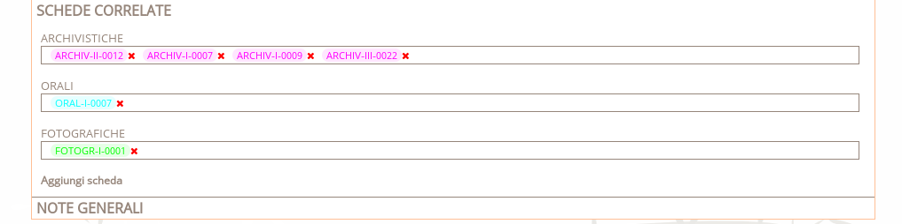

Lefontiperlastoria.it
Una piattaforma per la gestione integrata delle fonti
Gruppo di lavoro
|
Alberto Cosner Ideazione e coordinamento progettoCooperativa TeSto |
Giuseppe Naponiello Sviluppo database e scrittura codiceArc-Team s.r.l. |
|
Giuseppina Bernardin Dottore di ricerca in Storia medievaleFonti Archivistiche |
Ester Brunet Dottore di ricerca in Storia dell'arteFonti Storico-Artistiche |

Francesca Brunet Dottore di ricerca in Storia modernaFonti Bibliografiche e Fotografiche |
|
Alberto Cosner ArcheologoFonti Archeologiche e Architettoniche |
Simone Gaio ArcheologoFonti della Cultura Materiale |
Angelo Longo Antropologo culturaleFonti Orali |
Enti promotori
Breve storia del progetto
Il progetto pilota
- Nel 2012 nasce "Le fonti per la storia. Per un archivio delle fonti sulle valli di Primiero e Vanoi"
- Promuovere conoscenza, valorizzazione e studio del territorio
- Fornire adeguati supporti per la ricerca
- Ottenere la massima fruizione dei dati raccolti
Le fonti
| Archeologiche | |
| Architettoniche | |
| Archivistiche | |
| Bibliografiche | |
| Cartografiche | |
| Cultura materiale | |
| Fotografiche | |
| Orali | |
| Storico - artistiche |
Come mettere in relazione fonti tanto eterogenee?

Dal generale al particolare
Tre livelli di approfondimento
Ogni fonte può essere intesa sia singolarmente che come appartenente ad insiemi e sottoinsiemi, a loro volta interpretabili come fonti
| Il primo livello raccoglie le informazioni relative ad insiemi di fonti (archivi, collezioni di manufatti, gruppi di interviste, biblioteche, scavi archeologici, musei ecc.) | |
| Le tabelle di secondo livello schedano le unità contenute in tali insiemi (un fondo archivistico, un saggio scientifico, un sito archeologico, un’opera d'arte, un singolo manufatto, un’ intervista, ecc.) | |
| Alcune tipologie di fonti hanno richiesto inoltre l'elaborazione di un terzo livello di approfondimento, eventualmente (ma non necessariamente) estensibile in futuro all'intero lavoro, nel quale singole informazioni riportate nella scheda di secondo livello vengono estrapolate ed ulteriormente approfondite |
E' possibile creare collegamenti tra le varie schede in modo da renderle "navigabili" tanto in senso verticale (stessa famiglia), quanto in senso trasversale (schede affini)
La dimensione storica
Ogni fonte ha un attributo cronologico che la mette in relazione con le altre.
Ad esempio, la cronologia di un saggio pubblicato nel 2008 concernente la seconda guerra mondiale, o quello di un'intervista registrata nel 1990 sullo stesso argomento, dovrà comprendere il periodo bellico – vale a dire l’oggetto delle fonti – e non semplicemente la data di pubblicazione del volume o di registrazione dell’intervista
Solo in questo modo, infatti, gli esempi qui riportati possono essere messi in relazione, nell'ottica di una ricerca cronologica, con le fonti archivistiche, fotografiche, storico-artistiche, archeologiche, architettoniche, materiali risalenti al medesimo periodo storico
La dimensione geografica
Ogni fonte ha un doppio attributo geografico che la mette in relazione con le altre:
l'area di interesse della fonte e l'ubicazione della fonte.
AREA DI INTERESSE
Il contesto informativo della fonte
UBICAZIONE
Il contesto conservativo della fonte
Ogni area di interesse esprime non solo il contesto geografico di cui parla una determinata fonte, ma anche la collocazione temporale di quest’ultima
Massima fruizione dei dati ...e non solo
| Codice sorgente struttura web | Struttura del database, dati geografici, contenuti delle pagine web, immagini originali | Repository codice sorgente e struttura db |
|
Alberto Cosner alb.cosner@gmail.com |
|
|
Giuseppe Naponiello beppenapo@arc-team.com |